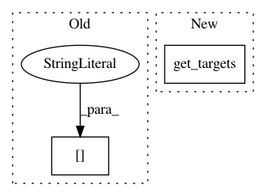

d3795d6cd1c66ac05dc0f4861ce69ab4680bff3d,fairseq/criterions/label_smoothed_cross_entropy.py,LabelSmoothedCrossEntropyCriterion,forward,#LabelSmoothedCrossEntropyCriterion#Any#Any#Any#,30
Before Change
net_output = model(**sample["net_input"])
lprobs = model.get_normalized_probs(net_output, log_probs=True)
target = sample["target"].unsqueeze(-1)
non_pad_mask = target.ne(self.padding_idx)
nll_loss = -lprobs.gather(dim=-1, index=target)[non_pad_mask]
smooth_loss = -lprobs.sum(dim=-1, keepdim=True)[non_pad_mask]
After Change
net_output = model(**sample["net_input"])
lprobs = model.get_normalized_probs(net_output, log_probs=True)
lprobs = lprobs.view(-1, lprobs.size(-1))
target = model.get_targets(sample, net_output).view(-1, 1)
non_pad_mask = target.ne(self.padding_idx)
nll_loss = -lprobs.gather(dim=-1, index=target)[non_pad_mask]
smooth_loss = -lprobs.sum(dim=-1, keepdim=True)[non_pad_mask]
In pattern: SUPERPATTERN
Frequency: 4
Non-data size: 2
Instances
Project Name: pytorch/fairseq
Commit Name: d3795d6cd1c66ac05dc0f4861ce69ab4680bff3d
Time: 2018-04-02
Author: myleott@fb.com
File Name: fairseq/criterions/label_smoothed_cross_entropy.py
Class Name: LabelSmoothedCrossEntropyCriterion
Method Name: forward
Project Name: pytorch/fairseq
Commit Name: d3795d6cd1c66ac05dc0f4861ce69ab4680bff3d
Time: 2018-04-02
Author: myleott@fb.com
File Name: fairseq/criterions/cross_entropy.py
Class Name: CrossEntropyCriterion
Method Name: forward